1
Click New
Open Inbox from the sidebar. The chips above the list filter it: All, New, Handled, Spam and Assigned to me. The number on each chip is how many emails it holds. Click New.
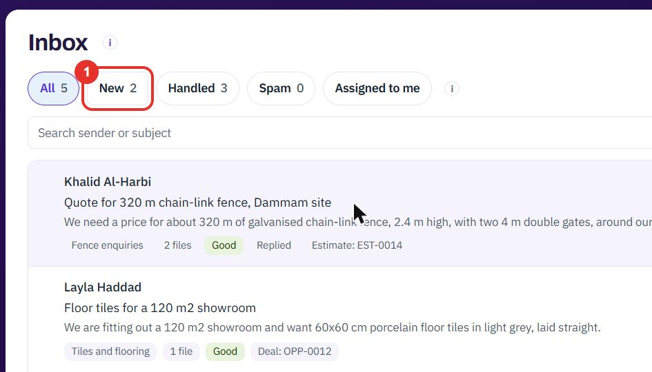
Customer emails land in one inbox that your team shares. You read them, answer them, and turn them into a record with one click. An administrator sets up the channels they come in through.
Do this to see what is new, narrow the list, and open one email.
Open Inbox from the sidebar. The chips above the list filter it: All, New, Handled, Spam and Assigned to me. The number on each chip is how many emails it holds. Click New.

If you have several channels, pick one in All addresses, then click Filter. You can also search by sender or subject.
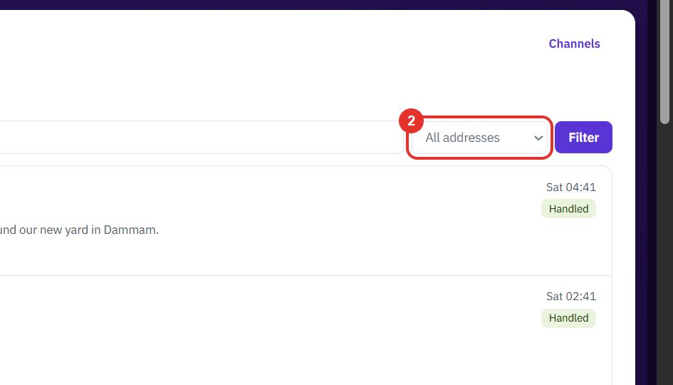
Each row shows the sender, the subject, the first line, and tags: the channel, the number of files, the file quality (Good, Needs review, Poor), and any record already made from it.
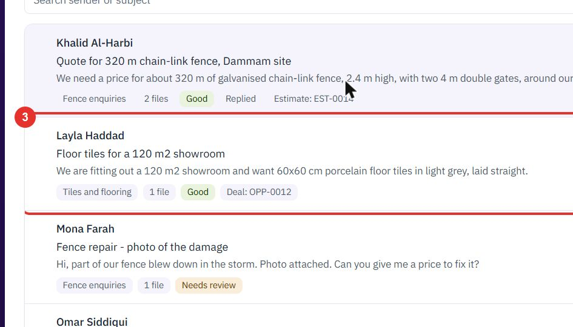
The panel on the right shows who sent the email and to which address. Use Assigned to to give the email to one person. The “i” icon next to Kept for … more days explains how long the email is kept.
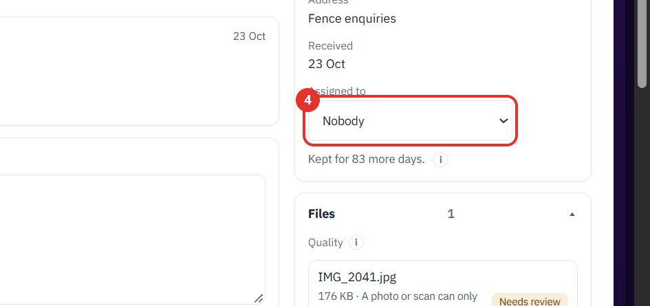
Attached files are listed with a quality tag. A note on the page tells you when a file cannot be measured from with confidence, for example a photo, and suggests asking for a PDF or DXF.
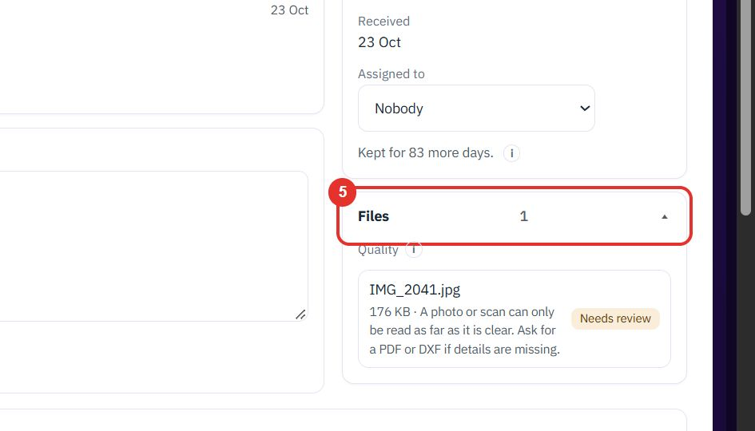
Do this to reply to the sender and move the email out of the New list.
Type your answer in the Reply box under the email. Send reply sends it. Ask for PDF or DXF sends a ready-made request for a better file.
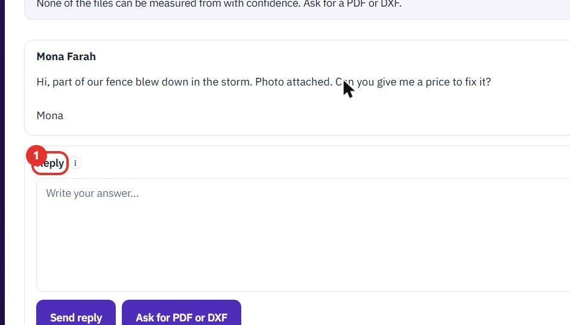
When the email is dealt with, click Mark handled. It moves to the Handled chip.
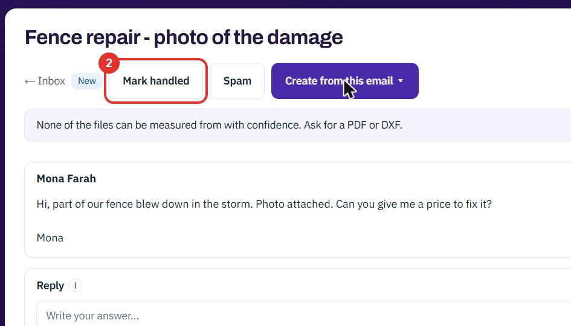
If the email is junk, click Spam. It moves to the Spam chip.
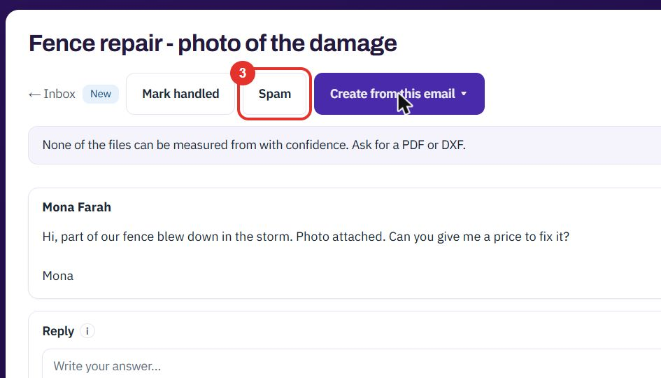
Do this to turn an enquiry into a quote, project, case, estimate, lead or deal without typing it again.
On an open email, click Create from this email. A menu lists what you can create. Pick one to start; this guide stops at the menu.
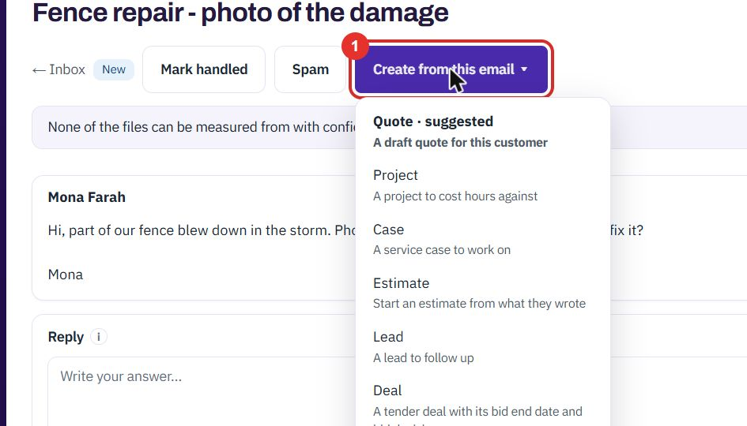
The menu offers Project, Case, Estimate, Lead and Deal. Each line says what you get, for example A lead to follow up.
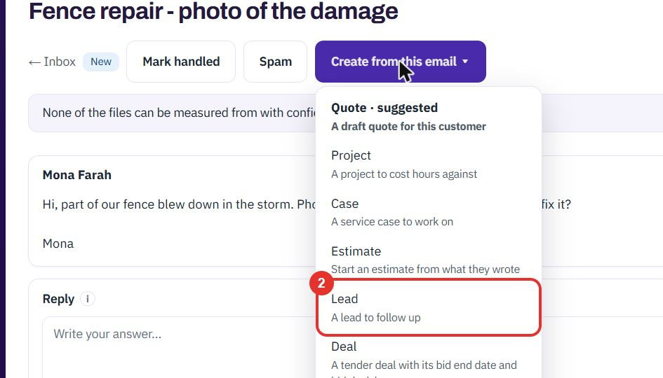
The first entry is the one the channel is set to offer first, here Quote · suggested. Which one comes first is set per channel, see “Set up an inbox channel”.
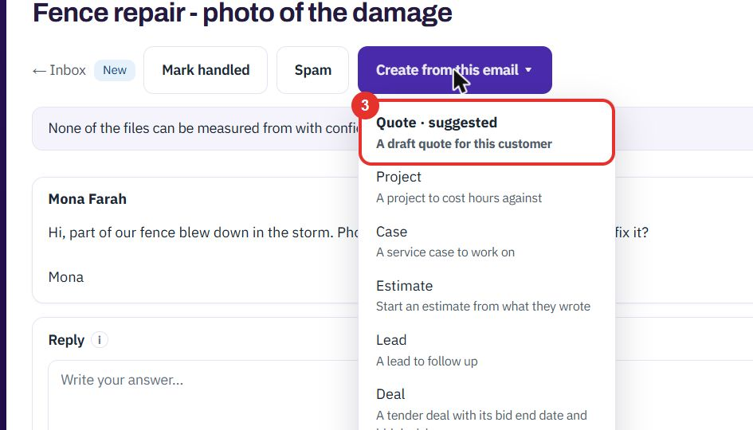
Do this once per address your customers write to. Only an administrator sees it.
On the Inbox page, click Channels at the top right. It opens Inbox channels in Settings.
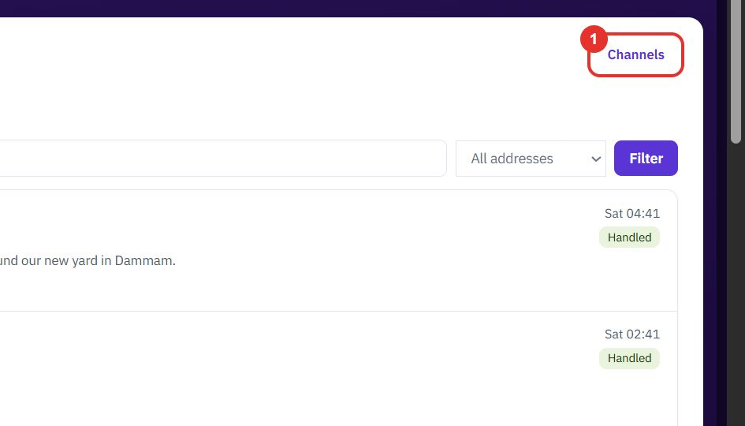
The list shows each channel with its address, team, what it offers first and when mail last arrived. Click a row to change it, or + New channel to add one.
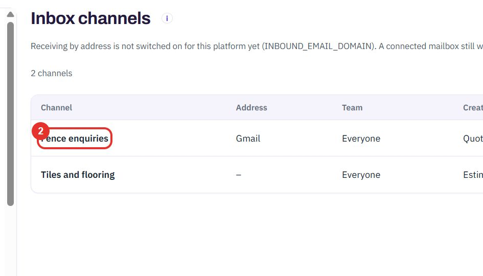
Tick the roles that read this channel. If nobody is picked, everyone with the Inbox sees it.
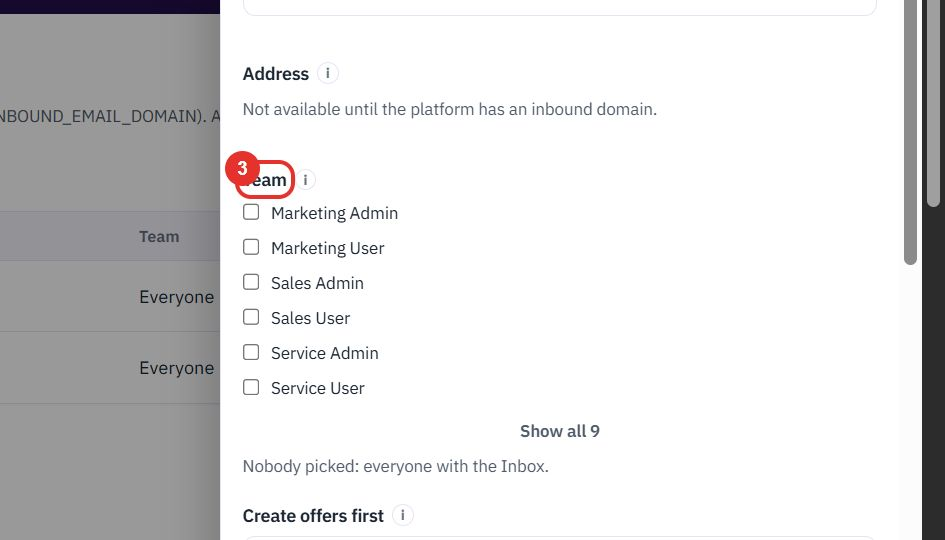
Choose which record the Create from this email menu puts first for this channel: Quote, Project, Case, Estimate, Lead, Deal or Nothing in particular.
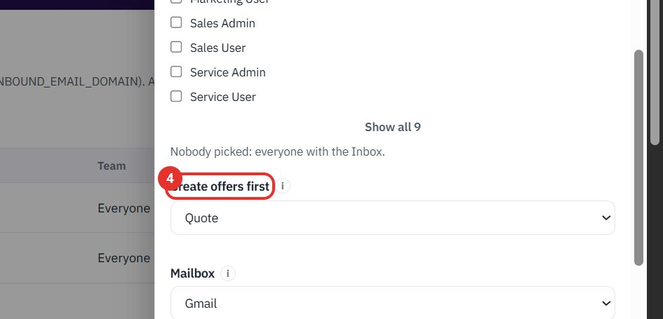
Choose how mail gets in: None: forwarding address only, Gmail or Mail server (IMAP).
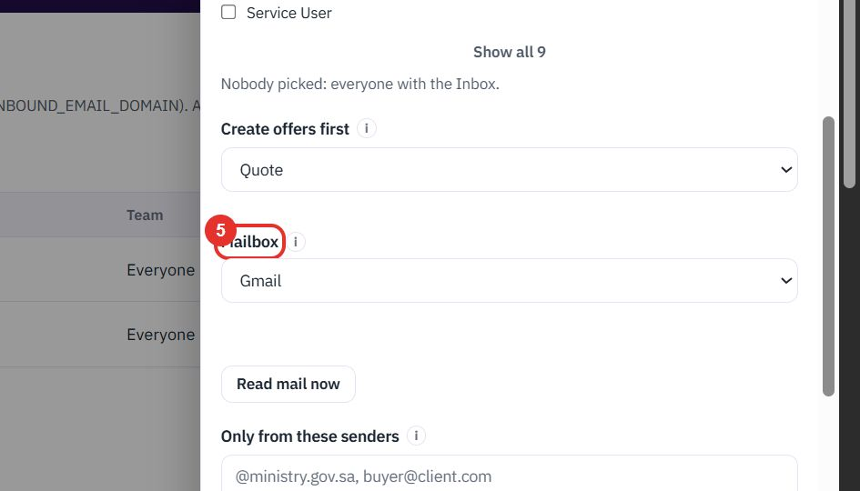
Read mail now fetches new mail from the mailbox straight away. Below it you can limit the channel to certain senders or to subjects that contain a word, and press Save when done.
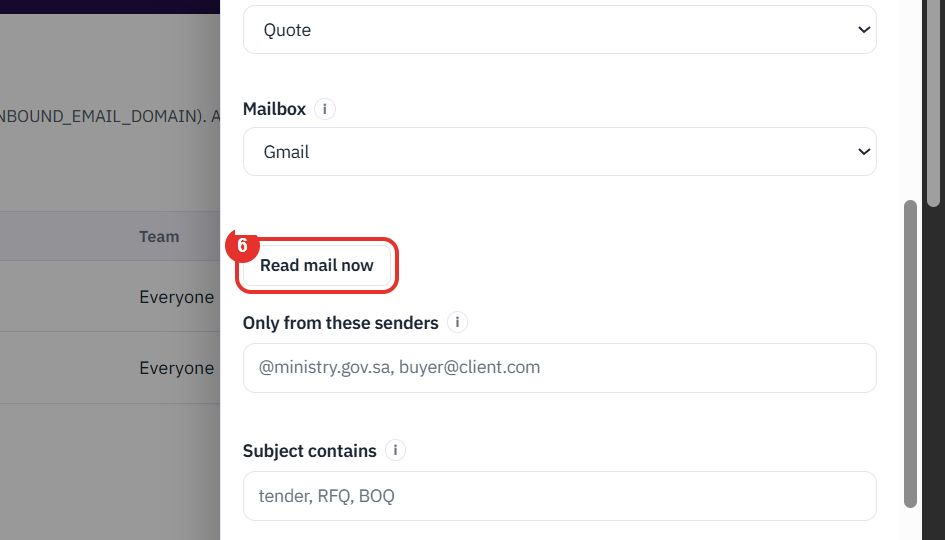
Twenty minutes on a live workspace, with your files and your team.